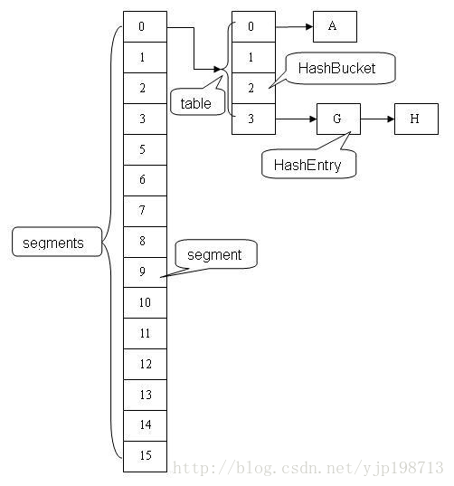

ConcurrentHashMap是线程安全的哈希表，它是通过“锁分段”来保证线程安全。ConcurrentHashMap将哈希表分成许多片段(Segment)，每一个片段除了保存哈希表之外，本质上也是一个“可重入的互斥锁”(ReentrantLock)。多线程对同一个片段的访问，是互斥的；但是，对于不同片段的访问，却是可以同步进行的。
ConcurrentHashMap继承于AbstractMap抽象类。
Segment是ConcurrentHashMap中的内部类，它就是ConcurrentHashMap中的“锁分段”对应的存储结构。ConcurrentHashMap与Segment是组合关系，1个ConcurrentHashMap对象包含若干个Segment对象。在代码中，这表现为ConcurrentHashMap类中存在“Segment数组”成员。
Segment类继承于ReentrantLock类，所以Segment本质上是一个可重入的互斥锁。
HashEntry也是ConcurrentHashMap的内部类，是单向链表节点，存储着key-value键值对。Segment与HashEntry是组合关系，Segment类中存在“HashEntry数组”成员，“HashEntry数组”中的每个HashEntry就是一个单向链表。
对于多线程访问对一个“哈希表对象”竞争资源，Hashtable是通过一把锁来控制并发；而ConcurrentHashMap则是将哈希表分成许多片段，对于每一个片段分别通过一个互斥锁来控制并发。ConcurrentHashMap对并发的控制更加细腻，它也更加适应于高并发场景！
什么是分段锁? 一个ConcurrentHashMap包含一个 Segement[]数组， 这个数组其中一个Segement对象中又包含一个HashEntry[]数组，每个HashEntry对象代表一个链表结构。其实每个Segment对象只是对整个Hash表的一部分做了特定的包装而已。
Segment本身就是ReentrantLock的子类（也就是一把重入锁），当访问某个数据时只需要锁住这个数据所在的Segement内组合的HashEntry[]数组即可，在其他Segment中的数据依旧可以正常访问。
也就是说，ConcurrentHashMap中，将原本一个大的Hash表分成n份，每一份都组合到一个Segment对象中，并且每一都会使用这一份对应的Segment锁保护。在最大程度上隔离了数据，并且把隔离的数据用Segment锁保护，达到不同线程互斥的访问。 如图为concurrentHashMap的内部结构：

x1// 创建一个带有默认初始容量 (16)、加载因子 (0.75) 和 concurrencyLevel (16) 的新的空映射。2ConcurrentHashMap()3// 创建一个带有指定初始容量、默认加载因子 (0.75) 和 concurrencyLevel (16) 的新的空映射。4ConcurrentHashMap(int initialCapacity)5// 创建一个带有指定初始容量、加载因子和默认 concurrencyLevel (16) 的新的空映射。6ConcurrentHashMap(int initialCapacity, float loadFactor)7// 创建一个带有指定初始容量、加载因子和并发级别的新的空映射。8ConcurrentHashMap(int initialCapacity, float loadFactor, int concurrencyLevel)9// 构造一个与给定映射具有相同映射关系的新映射。10ConcurrentHashMap(Map<? extends K,? extends V> m)11
12// 从该映射中移除所有映射关系13void clear()14// 一种遗留方法，测试此表中是否有一些与指定值存在映射关系的键。15boolean contains(Object value)16// 测试指定对象是否为此表中的键。17boolean containsKey(Object key)18// 如果此映射将一个或多个键映射到指定值，则返回 true。19boolean containsValue(Object value)20// 返回此表中值的枚举。21Enumeration<V> elements()22// 返回此映射所包含的映射关系的 Set 视图。23Set<Map.Entry<K,V>> entrySet()24// 返回指定键所映射到的值，如果此映射不包含该键的映射关系，则返回 null。25V get(Object key)26// 如果此映射不包含键-值映射关系，则返回 true。27boolean isEmpty()28// 返回此表中键的枚举。29Enumeration<K> keys()30// 返回此映射中包含的键的 Set 视图。31Set<K> keySet()32// 将指定键映射到此表中的指定值。33V put(K key, V value)34// 将指定映射中所有映射关系复制到此映射中。35void putAll(Map<? extends K,? extends V> m)36// 如果指定键已经不再与某个值相关联，则将它与给定值关联。37V putIfAbsent(K key, V value)38// 从此映射中移除键（及其相应的值）。39V remove(Object key)40// 只有目前将键的条目映射到给定值时，才移除该键的条目。41boolean remove(Object key, Object value)42// 只有目前将键的条目映射到某一值时，才替换该键的条目。43V replace(K key, V value)44// 只有目前将键的条目映射到给定值时，才替换该键的条目。45boolean replace(K key, V oldValue, V newValue)46// 返回此映射中的键-值映射关系数。47int size()48// 返回此映射中包含的值的 Collection 视图。49Collection<V> values()611("unchecked")2public ConcurrentHashMap(int initialCapacity,3 float loadFactor, int concurrencyLevel) {4 // 参数有效性判断5 if (!(loadFactor > 0) || initialCapacity < 0 || concurrencyLevel <= 0)6 throw new IllegalArgumentException();7 8 // concurrencyLevel是“用来计算segments的容量”9 if (concurrencyLevel > MAX_SEGMENTS)10 //最大的并发等级(分段数组的长度)不能超过MAX_SEGMENTS 1<<16(也就是1的二进制向左移16位,65535)11 concurrencyLevel = MAX_SEGMENTS;12 13 int sshift = 0;14 int ssize = 1;15 16 // ssize=“大于或等于concurrencyLevel的最小的2的N次方值”17 //如果你传入的是15 就是向上取2的4次方倍 也就是16.18 while (ssize < concurrencyLevel) {19 ++sshift;20 ssize <<= 1;21 }22 23 // 初始化segmentShift和segmentMask24 //segmentShift和segmentMask在定位segment使用，25 //segmentShift = 32 - ssize向左移位的次数，26 //segmentMask = ssize - 1。27 //ssize的最大长度是65536，对应的 segmentShift最大值为16，segmentMask最大值是65535，对应的二进制16位全为1；28 this.segmentShift = 32 - sshift;29 this.segmentMask = ssize - 1;30 31 // 哈希表的初始容量32 // 哈希表的实际容量=“segments的容量” x “segments中数组的长度”33 if (initialCapacity > MAXIMUM_CAPACITY)34 initialCapacity = MAXIMUM_CAPACITY;35 36 // “哈希表的初始容量” / “segments的容量”37 int c = initialCapacity / ssize;38 39 if (c * ssize < initialCapacity)40 ++c;41 42 // cap就是“segments中的HashEntry数组的长度”43 int cap = MIN_SEGMENT_TABLE_CAPACITY;44 45 while (cap < c)46 cap <<= 1;47 48 // 1.初始化每个segment的HashEntry长度；49 // 2.创建segment数组和segment[0]。50 //HashEntry长度cap同样也是2的N次方，默认情况，ssize = 16，initialCapacity = 16，loadFactor = 0.75f51 //那么cap = 2，threshold = (int) cap * loadFactor = 1。阈值为152 //HashEntry大小的计算也是2的N次方（cap <<=1）， cap的初始值为1，所以HashEntry最小的容量为253 Segment<K,V> s0 =54 new Segment<K,V>(loadFactor, (int)(cap * loadFactor),55 (HashEntry<K,V>[])new HashEntry[cap]);56 Segment<K,V>[] ss = (Segment<K,V>[])new Segment[ssize];57 58 UNSAFE.putOrderedObject(ss, SBASE, s0); // ordered write of segments[0]59 60 this.segments = ss;61}整个初始化是通过参数initialCapacity(初始容量)，loadFactor(增长因子)和concurrencyLevel(并发等级)来初始化segmentShift（段偏移量）、segmentMask（段掩码）和segment数组。
ConcurrentHashMap采用了“锁分段”技术；在代码中，它通过“segments数组”对象来保存各个分段。segments的定义如下：
final Segment：
171static final class Segment<K,V> extends ReentrantLock implements Serializable {2 ...3
4 transient volatile HashEntry<K,V>[] table;5 // threshold阈，是哈希表在其容量自动增加之前可以达到多满的一种尺度。6 transient int threshold;7 // loadFactor是加载因子8 final float loadFactor;9
10 Segment(float lf, int threshold, HashEntry<K,V>[] tab) {11 this.loadFactor = lf;12 this.threshold = threshold;13 this.table = tab;14 }15
16 ...17}Segment包含HashEntry数组，HashEntry保存了哈希表中的键值对。Segment继承于ReentrantLock。这意味着，Segment本质上就是可重入的互斥锁。
HashEntry数组：
151static final class HashEntry<K,V> {2 final int hash; // 哈希值3 final K key; // 键4 volatile V value; // 值5 volatile HashEntry<K,V> next; // 下一个HashEntry节点6
7 HashEntry(int hash, K key, V value, HashEntry<K,V> next) {8 this.hash = hash;9 this.key = key;10 this.value = value;11 this.next = next;12 }13
14 ...15}和HashMap的节点一样，HashEntry也是链表。这就说明，ConcurrentHashMap是链式哈希表，它是通过“拉链法”来解决哈希冲突的。
segments.length一旦生产不会改变,rehash只是针对Segement中的hashtable而言！
231public V get(Object key) {2 Segment<K,V> s; // manually integrate access methods to reduce overhead3 HashEntry<K,V>[] tab;4 int h = hash(key);5 // 计算出在哪个Segment分段中6 long u = (((h >>> segmentShift) & segmentMask) << SSHIFT) + SBASE;7 8 // 获取key对应的Segment片段。9 // 如果Segment片段不为null，则在“Segment片段的HashEntry数组中”中找到key所对应的HashEntry列表；10 // 接着遍历该HashEntry链表，找到于key-value键值对对应的HashEntry节点。11 if ((s = (Segment<K,V>)UNSAFE.getObjectVolatile(segments, u)) != null &&12 (tab = s.table) != null) {13 // 循环获取key对应的value14 for (HashEntry<K,V> e = (HashEntry<K,V>) UNSAFE.getObjectVolatile15 (tab, ((long)(((tab.length - 1) & h)) << TSHIFT) + TBASE);16 e != null; e = e.next) {17 K k;18 if ((k = e.key) == key || (e.hash == h && key.equals(k)))19 return e.value;20 }21 }22 return null;23}get(Object key)的作用是返回key在ConcurrentHashMap哈希表中对应的值。
它首先根据key计算出来的哈希值，获取key所对应的Segment片段。 如果Segment片段不为null，则在“Segment片段的HashEntry数组中”中找到key所对应的HashEntry列表。Segment包含“HashEntry数组”对象，而每一个HashEntry本质上是一个单向链表。 接着遍历该HashEntry链表，找到于key-value键值对对应的HashEntry节点。
41// 操作系统层方法读取Segment2s = (Segment<K, V>) UNSAFE.getObjectVolatile(segments, u)) 3
4UNSAFE.getObjectVolatile(tab,((long) (((tab.length - 1) & h)) << TSHIFT) + TBASE)保证了segement元素读取，以及(segement中)HashEntry[]数组中的元素读取的原子性、可见性。也就是通过这个方法保证了segement[]这个数组HashEntry[]数组被volatile修饰，通常一个数组即使声明了volatile，但也无法保证volatile语义，这里使用UNSAFE方法在操作系统层面保证线程安全。当线程安全的读到了HashEntry元素，通过volatile声明保证其中value、next的volatile语义，从而保证线程安全：
21 volatile V value;2 volatile HashEntry<K, V> next;161public V put(K key, V value) {2 Segment<K, V> s;3 if (value == null)4 throw new NullPointerException();5 6 int hash = hash(key);7 int j = (hash >>> segmentShift) & segmentMask;8 if ((s = (Segment<K, V>) UNSAFE.getObject //这里并不需要保证volatile语义，9 //因为如果null则在ensureSegment保证；10 //如果不为null,写操作会使用"CAS"保证11 //nonvolatile; recheck12 (segments, (j << SSHIFT) + SBASE)) == null) // in ensureSegment13 s = ensureSegment(j);// 获取到新初始化的segment14 // 存在的话 通过CAS保证15 return s.put(key, hash, value, false);16 }put()根据key获取对应的哈希值，再根据哈希值找到对应的Segment片段。如果Segment片段不存在，则新增一个Segment。
将key-value键值对添加到Segment片段中。
341/**2 * 根据segementIndex获取对应Segement,如果这个segem不存在,则创建一个3 */4("unchecked")5private Segment<K, V> ensureSegment(int k) {6 final Segment<K, V>[] ss = this.segments;7 long u = (k << SSHIFT) + SBASE; // 计算segment对应index==u8 9 Segment<K, V> seg;10 11 if ((seg = (Segment<K, V>) UNSAFE.getObjectVolatile(ss, u)) == null) {// 原子性检查是否未被初始化12 Segment<K, V> proto = ss[0]; // 使用ss[0]作为模板，并复制产生新的segment对象13 int cap = proto.table.length;// 获取模板HashEntry[].length14 float lf = proto.loadFactor;// 获取模板加载因子15 int threshold = (int) (cap * lf);// 获取模板阈值16 17 HashEntry<K, V>[] tab = (HashEntry<K, V>[]) new HashEntry[cap];// 初始化新的HashEntry[]数组18 19 // recheck，防止已经被初始化；否则直接返回即可 (双重校验)20 if ((seg = (Segment<K, V>) UNSAFE.getObjectVolatile(ss, u)) == null) { 21 22 // 初始化新的segment23 Segment<K, V> s = new Segment<K, V>(lf, threshold, tab);24 25 // 自旋，直到初始化成功.通过CAS\getObjectVolatile保证原子性、可见性26 while ((seg = (Segment<K, V>) UNSAFE.getObjectVolatile(ss, u)) == null) {27 // CAS保证28 if (UNSAFE.compareAndSwapObject(ss, u, null, seg = s))29 break;30 }31 }32 }33 return seg;34}Segment存在的话就用put方法来添加数据。
441final V put(K key, int hash, V value, boolean onlyIfAbsent) {2 // 没有获取到锁执行scanAndLockForPut 获取到锁,保证当前segment只能被一个线程使用3 HashEntry<K, V> node = tryLock() ? null : scanAndLockForPut(key, hash, value);4 V oldValue;5 6 try {7 HashEntry<K, V>[] tab = table;8 int index = (tab.length - 1) & hash;9 HashEntry<K, V> first = entryAt(tab, index);// 获取HashEntry[]对应的HashEntry元素10 11 for (HashEntry<K, V> e = first;;) {12 if (e != null) {// 表示HashEntry[]中存在key对应的HashEntry,按onlyIfAbsent规则进行覆盖13 K k;14 if ((k = e.key) == key || (e.hash == hash && key.equals(k))) {15 oldValue = e.value;16 if (!onlyIfAbsent) {17 e.value = value;18 ++modCount;// put结构化修改操作，modCount+119 }20 break;21 }22 e = e.next;23 24 } else {// 如果e==null，则这个key没有对应的HashEntry,则容器首次遇见这个key,初始化一个HashEntry25 if (node != null)26 node.setNext(first);27 else28 node = new HashEntry<K, V>(hash, key, value, first);29 int c = count + 1;// segment中的HashEntry数组length+1.count表示HashEntry对象个数30 if (c > threshold && tab.length < MAXIMUM_CAPACITY)31 rehash(node);32 else33 setEntryAt(tab, index, node);34 ++modCount;35 count = c;36 oldValue = null;37 break;38 }39 }40 } finally {41 unlock();42 }43 return oldValue;44} put()的作用是将key-value键值对插入到“当前Segment对应的HashEntry中”，在插入前它会获取Segment对应的互斥锁，插入后会释放锁。具体的插入过程如下：
首先根据“hash值”获取“当前Segment的HashEntry数组对象”中的“HashEntry节点”，每个HashEntry节点都是一个单向链表。
接着，遍历HashEntry链表。 若在遍历HashEntry链表时，发现key已经存在，根据onlyIfAbsent进行判断：
若onlyIfAbsent判断为true则不进行插入，直接返回。
判断为false，就覆盖原来的value，在返回。
当链表中key不存在时，并且key-value所在的node（HashEntry）节点也已经创建好【即在scanAndLockForPut()获取锁时，已经新建了key-value对应的HashEntry节点】就把node添加到Segment中；如果node节点不存在，就新建key-value对应的HashEntry节点，然后再node添加到Segment中。
在将node添加到Segment中前，会判断是否需要rehash，判断逻辑是，容量是否超过阈值，并且HashEntry数组的长度没有超过限制。
481private HashEntry<K,V> scanAndLockForPut(K key, int hash, V value) {2 // 第一个HashEntry节点3 HashEntry<K,V> first = entryForHash(this, hash);4 5 // 当前的HashEntry节点6 HashEntry<K,V> e = first;7 HashEntry<K,V> node = null;8 9 // 重复计数(自旋计数器)10 int retries = -1; // negative while locating node11
12 // 查找”key-value键值对“在”HashEntry链表上对应的节点“；13 // 若找到的话，则不断的自旋；在自旋期间，若通过tryLock()获取锁成功则返回；否则自旋MAX_SCAN_RETRIES次数之后，强制获取”锁“并退出。14 // 若没有找到的话，则新建一个HashEntry链表。然后不断的自旋。15 // 此外，若在自旋期间，HashEntry链表的表头发生变化；则重新进行查找和自旋工作！16 while (!tryLock()) {17 HashEntry<K,V> f; // to recheck first below18 // 1. retries<0的处理情况19 if (retries < 0) {20 // 1.1 如果当前的HashEntry节点为空(意味着，在该HashEntry链表上上没有找到”要插入的键值对“对应的节点)，而且node=null；则新建HashEntry链表。21 if (e == null) {22 if (node == null) // speculatively create node23 node = new HashEntry<K,V>(hash, key, value, null);24 retries = 0;25 }26 // 1.2 如果当前的HashEntry节点是”要插入的键值对在该HashEntry上对应的节点“，则设置retries=027 else if (key.equals(e.key))28 retries = 0;29 // 1.3 设置为下一个HashEntry。30 else31 e = e.next;32 }33 // 2. 如果自旋次数超过限制，则获取“锁”并退出34 else if (++retries > MAX_SCAN_RETRIES) {35 lock();36 break;37 }38 // 3. 当“尝试了偶数次”时，就获取“当前Segment的第一个HashEntry”，即f。39 // 然后，通过f!=first来判断“当前Segment的第一个HashEntry是否发生了改变”。40 // 若是的话，则重置e，first和retries的值，并重新遍历。41 else if ((retries & 1) == 0 &&42 (f = entryForHash(this, hash)) != first) {43 e = first = f; // re-traverse if entry changed44 retries = -1;45 }46 }47 return node;48}canAndLockForPut()的目标是获取锁。流程如下：
首先会调用entryForHash()，根据hash值获取当前Segment中对应的HashEntry节点(first)(就是要找到对应的HashEntry链表)。
进入while循环。会遍历链表，判断key是否存在：
存在的话，不断的执行while循环（自旋）。来通过tryLock()获取锁，获取成功就返回；获取不成功否则，在自旋到最大次数（MAX_SCAN_RETRIES配置）之后，强制获取锁并退出。
不存在到的话，新建一个HashEntry链表，不断的自旋。跟上边一样的情况。
如果在自旋期间发现HashEntry链表的表头发生变化，则需要重新进行查找和自旋工作！
551private void rehash(HashEntry<K,V> node) {2 HashEntry<K,V>[] oldTable = table;3 // ”Segment中原始的HashEntry数组的长度“4 int oldCapacity = oldTable.length;5 // ”Segment中新HashEntry数组的长度“6 int newCapacity = oldCapacity << 1;7 // 新的阈值8 threshold = (int)(newCapacity * loadFactor);9 // 新的HashEntry数组10 HashEntry<K,V>[] newTable =11 (HashEntry<K,V>[]) new HashEntry[newCapacity];12 int sizeMask = newCapacity - 1;13 14 // 遍历”原始的HashEntry数组“，15 // 将”原始的HashEntry数组“中的每个”HashEntry链表“的值，都复制到”新的HashEntry数组的HashEntry元素“中。16 for (int i = 0; i < oldCapacity ; i++) {17 // 获取”原始的HashEntry数组“中的”第i个HashEntry链表“18 HashEntry<K,V> e = oldTable[i];19 if (e != null) {20 HashEntry<K,V> next = e.next;21 int idx = e.hash & sizeMask;22 if (next == null) // Single node on list23 newTable[idx] = e;24 else { // Reuse consecutive sequence at same slot25 HashEntry<K,V> lastRun = e;26 int lastIdx = idx;27 for (HashEntry<K,V> last = next;28 last != null;29 last = last.next) {30 int k = last.hash & sizeMask;31 if (k != lastIdx) {32 lastIdx = k;33 lastRun = last;34 }35 }36 newTable[lastIdx] = lastRun;37 38 // 将”原始的HashEntry数组“中的”HashEntry链表(e)“的值，都复制到”新的HashEntry数组的HashEntry“中。39 for (HashEntry<K,V> p = e; p != lastRun; p = p.next) {40 V v = p.value;41 int h = p.hash;42 int k = h & sizeMask;43 HashEntry<K,V> n = newTable[k];44 newTable[k] = new HashEntry<K,V>(h, p.key, v, n);45 }46 }47 }48 }49 50 // 将新的node节点添加到“Segment的新HashEntry数组(newTable)“中。51 int nodeIndex = node.hash & sizeMask; // add the new node52 node.setNext(newTable[nodeIndex]);53 newTable[nodeIndex] = node;54 table = newTable;55}rehash()的作用是将”Segment的容量“变为”原始的Segment容量的2倍“。在将原始的数据拷贝到“新的Segment”中后，会将新增加的key-value键值对添加到“新的Segment”中。
注：可以看到rehash是针对"某个"segment做的扩容，而非对所有Segement。并且是先判断在扩容，然后插入新的元素。这点相对HashMap的扩容更合理，HashMap插入后再去判断扩容，有可能扩容后并不会有新元素进来，也就是失去了扩容的意义。
11static final sun.misc.Unsafe UNSAFE;Unsafe.java在openjdk6中的路径是：openjdk6/jdk/src/share/classes/sun/misc/Unsafe.java。其中，putOrderedObject()的源码下：
11public native void putOrderedObject(Object o, long offset, Object x);putOrderedObject()是一个本地方法。
它会设置obj对象中offset偏移地址对应的object型field的值为指定值。它是一个有序或者有延迟的putObjectVolatile()方法，并且不保证值的改变被其他线程立即看到。只有在field被volatile修饰并且期望被意外修改的时候，使用putOrderedObject()才有用。 总之，setEntryAt()的目的是设置tab中第i位置元素的值为e，且该设置会有延迟。
61public V remove(Object key) {2 int hash = hash(key);3 // 根据hash值，找到key对应的Segment片段。4 Segment<K,V> s = segmentForHash(hash);5 return s == null ? null : s.remove(key, hash, null);6}remove()首先根据“key的计算出来的哈希值”找到对应的Segment片段，然后再从该Segment片段中删除对应的“key-value键值对”。
391final V remove(Object key, int hash, Object value) {2 // 尝试获取Segment对应的锁。3 // 尝试失败的话，则通过scanAndLock()来获取锁。4 if (!tryLock())5 scanAndLock(key, hash);6 V oldValue = null;7 try {8 // 根据“hash值”找到“Segment的HashEntry数组”中对应的“HashEntry节点(e)”，该HashEntry节点是一HashEntry个链表。9 HashEntry<K,V>[] tab = table;10 int index = (tab.length - 1) & hash;11 HashEntry<K,V> e = entryAt(tab, index);12 HashEntry<K,V> pred = null;13 // 遍历“HashEntry链表”，删除key-value键值对14 while (e != null) {15 K k;16 HashEntry<K,V> next = e.next;17 if ((k = e.key) == key ||18 (e.hash == hash && key.equals(k))) {19 V v = e.value;20 if (value == null || value == v || value.equals(v)) {21 if (pred == null)22 setEntryAt(tab, index, next);23 else24 pred.setNext(next);25 ++modCount;26 --count;27 oldValue = v;28 }29 break;30 }31 pred = e;32 e = next;33 }34 } finally {35 // 释放锁36 unlock();37 }38 return oldValue;39} remove()的目的就是删除key-value键值对。在删除之前，它会获取到Segment的互斥锁，在删除之后，再释放锁。
它的删除过程也比较简单，它会先根据hash值，找到“Segment的HashEntry数组”中对应的“HashEntry”节点。根据Segment的数据结构，我们知道Segment中包含一个HashEntry数组对象，而每一个HashEntry本质上是一个单向链表。 在找到“HashEntry”节点之后，就遍历该“HashEntry”节点对应的链表，找到key-value键值对对应的节点，然后删除。
351private void scanAndLock(Object key, int hash) {2 // 第一个HashEntry节点3 HashEntry<K,V> first = entryForHash(this, hash);4 HashEntry<K,V> e = first;5 int retries = -1;6
7 // 查找”key-value键值对“在”HashEntry链表上对应的节点“；8 // 无论找没找到，最后都会不断的自旋；在自旋期间，若通过tryLock()获取锁成功则返回；否则自旋MAX_SCAN_RETRIES次数之后，强制获取”锁“并退出。9 // 若在自旋期间，HashEntry链表的表头发生变化；则重新进行查找和自旋！10 while (!tryLock()) {11 HashEntry<K,V> f;12 if (retries < 0) {13 // 如果“遍历完该HashEntry链表，仍然没找到”要删除的键值对“对应的节点”14 // 或者“在该HashEntry链表上找到”要删除的键值对“对应的节点”，则设置retries=015 // 否则，设置e为下一个HashEntry节点。16 if (e == null || key.equals(e.key))17 retries = 0;18 else19 e = e.next;20 }21 // 自旋超过限制次数之后，获取锁并退出。22 else if (++retries > MAX_SCAN_RETRIES) {23 lock();24 break;25 }26 // 当“尝试了偶数次”时，就获取“当前Segment的第一个HashEntry”，即f。27 // 然后，通过f!=first来判断“当前Segment的第一个HashEntry是否发生了改变”。28 // 若是的话，则重置e，first和retries的值，并重新遍历。29 else if ((retries & 1) == 0 &&30 (f = entryForHash(this, hash)) != first) {31 e = first = f;32 retries = -1;33 }34 }35}scanAndLock()的目标是获取锁。它的实现与scanAndLockForPut()类似。
411public int size() {2 // Try a few times to get accurate count. On failure due to3 // continuous async changes in table, resort to locking.4 final Segment<K,V>[] segments = this.segments;5 int size;6 boolean overflow; // true if size overflows 32 bits7 long sum; // sum of modCounts8 long last = 0L; // previous sum9 int retries = -1; // first iteration isn't retry10 try {11 12 for (;;) {13 //RETRIES_BEFORE_LOCK为不变常量2 尝试两次不锁住Segment的方式来统计每个Segment的大小,如果在统计的过程中Segment的count发生变化,这时候再加锁统计Segment的count14 if (retries++ == RETRIES_BEFORE_LOCK) {15 for (int j = 0; j < segments.length; ++j)16 ensureSegment(j).lock(); // force creation17 }18 sum = 0L;19 size = 0;20 overflow = false;21 for (int j = 0; j < segments.length; ++j) {22 Segment<K,V> seg = segmentAt(segments, j);23 if (seg != null) {24 sum += seg.modCount;25 int c = seg.count;26 if (c < 0 || (size += c) < 0)27 overflow = true;28 }29 }30 if (sum == last)31 break;32 last = sum;33 }34 } finally {35 if (retries > RETRIES_BEFORE_LOCK) {36 for (int j = 0; j < segments.length; ++j)37 segmentAt(segments, j).unlock();38 }39 }40 return overflow ? Integer.MAX_VALUE : size;41}size方法的实现是遍历所有的segment，统计累计所有segment里元素的个数。
这个遍历会做两次，如果两次计算中结构性变化的次数（modCount）相等，那么就直接完成返回。如果第一次遍历统计与第二次遍历统计直接发生了结构化操作（比如、put被另一个线程执行了），那么再尝试一次，如果第二次与第三次统计的结果依旧不相等，则动用Lock锁，锁住所有的segment（其他线程的put、clear等操作被阻塞）。接下来，再次统计两次，这次由于锁保持了互斥，所以不会被其他线程干扰，modCount不会改变，sum == last，返回统计值，并且要释放所有Segement锁。
前三次计算size，是无锁的操作。以提高性能。其实这里有个优化点，第一次的size并不用真的计算出来。可以只计算后两次可能会真实使用的size即可。当然这样的锁是非常低效的，通常并发的场景中不会发生。
关于size 再引用一个我觉得很好的例子:一个Map有4个Segment，标记为S1，S2，S3，S4，现在我们要获取Map的size。计算过程 是这样的：
第一次计算：不对S1，S2，S3，S4加锁，遍历所有的Segment，假设每个Seg ment的大小分别为1，2，3，4，更新操作(添加或删除)次数分别为：2，2，3，1，则这次计算可以得 到Map的总大小为1+2+3+4=10，总共更新操作次数为2+2+3+1=8；
第二次计算，不对S1,S 2,S3,S4加锁，遍历所有Segment，假设这次每个Segment的大小变成了2，2，3，4，更 新次数分别为3，2，3，1，因为两次计算得到的Map更新次数不一致(第一次是8，第二 次是9)则可以断定这段时间Map数据被更新，则此时应该再试一次；
第三次计算，不对S1，S2，S3，S4加锁，遍历所有Segment，假设每个Segment的更新操作次数还是为3，2 ，3，1，则因为第二次计算和第三次计算得到的Map的更新操作的次数是一致的，就能 说明第二次计算和第三次计算这段时间内Map数据没有被更新，此时可以直接返回第三 次计算得到的Map的大小。最坏的情况：第三次计算得到的数据更新次数和第二次也不 一样，则只能先对所有Segment加锁再计算最后解锁。
ConcurrentHashMap是线程安全的哈希表，它是通过“锁分段”来实现的。ConcurrentHashMap中包括了“Segment(锁分段)数组”，每个Segment就是一个哈希表，而且也是可重入的互斥锁。
Segment是哈希表表现在，Segment包含了“HashEntry数组”，而“HashEntry数组”中的每一个HashEntry元素是一个单向链表。即Segment是通过链式哈希表。
Segment是可重入的互斥锁表现在，Segment继承于ReentrantLock，而ReentrantLock就是可重入的互斥锁。 对于ConcurrentHashMap的添加，删除操作，在操作开始前，线程都会获取Segment的互斥锁；操作完毕之后，才会释放。
对于读取操作，它是通过volatile去实现的，HashEntry数组是volatile类型的，而volatile能保证“即对一个volatile变量的读，总是能看到（任意线程）对这个volatile变量最后的写入”，即我们总能读到其它线程写入HashEntry之后的值
对于扩容来说，ConcurrentHashMap将Segment的容量“变为”原始的Segment容量的2倍“。 在将原始的数据拷贝到“新的Segment”中后，会将新增加的key-value键值对添加到“新的Segment”中。rehash是针对某个segment做的扩容，而非对所有Segement。并且是先判断在扩容，然后插入新的元素。这点相对HashMap的扩容更合理，HashMap插入后再去判断扩容，有可能扩容后并不会有新元素进来，也就是失去了扩容的意义。
对于获取ConcurrentHashMap的长度是循环所有的segment，统计所有segment里元素的个数。
这个遍历会做两次，如果两次计算中结构性变化的次数（modCount）相等，那么就直接完成返回。如果第一次遍历统计与第二次遍历统计直接发生了结构化操作（比如、put被另一个线程执行了），那么再尝试一次，如果第二次与第三次统计的结果依旧不相等，则动用Lock锁，锁住所有的segment（其他线程的put、clear等操作被阻塞）。接下来，再次统计两次，这次由于锁保持了互斥，所以不会被其他线程干扰，modCount不会改变，sum == last，返回统计值，并且要释放所有Segement锁。